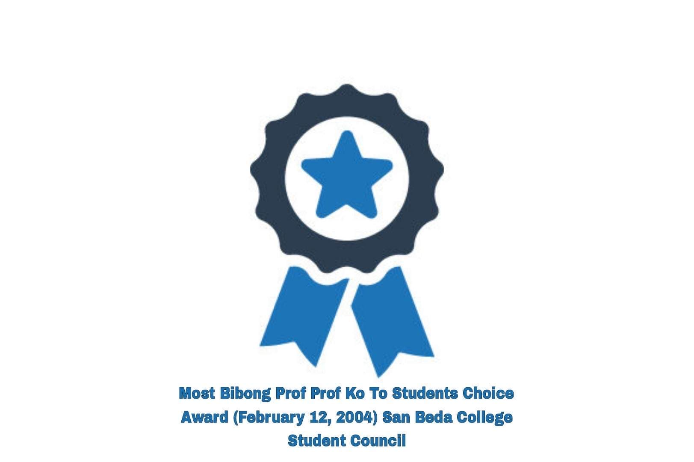
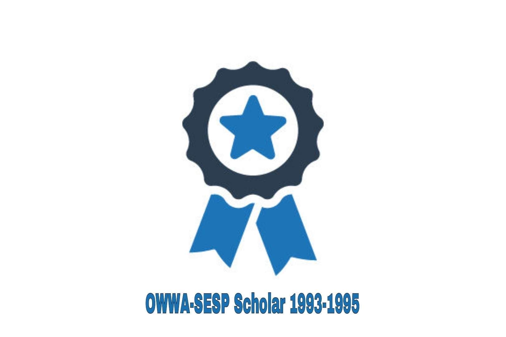

Outstanding Organization Moderator, Gabi ng Parangal San Beda College of Arts and Sciences March 2013
Top Ten Faculty Members on Student Evaluation (ranked 9th) -- San Beda College SY 2010-2011
Professor Bibbo Students Choice Award (February 14, 2005) San Beda College Student Council
Teaching Excellence Award -- Far Eastern University – East Asia College, First Semester SY 2008-2009 February 21, 2009
Top Ten Faculty Members on Student Evaluation (ranked 4th) -- San Beda College SY 1996-1997 – Oct 24, 1997
Most Bibong Prof Prof Ko To Students Choice Award (February 12, 2004) San Beda College Student Council

PD 451 Scholar June 1985

Silver Medalist – Oratorical Contest – 1st Year High School Level, National Teachers College, October 1982
OWWA-SESP Scholar 1993-1995
First Place - Paper Presentation (Technology, Engineering and Sciences Category , 3rd International and Annual Convention – Philippine Association of Extension Program Implementers (PAEPI-Global), Bahay Kalinaw University of the Philippines Diliman, Quezon City, February 22-23, 2016